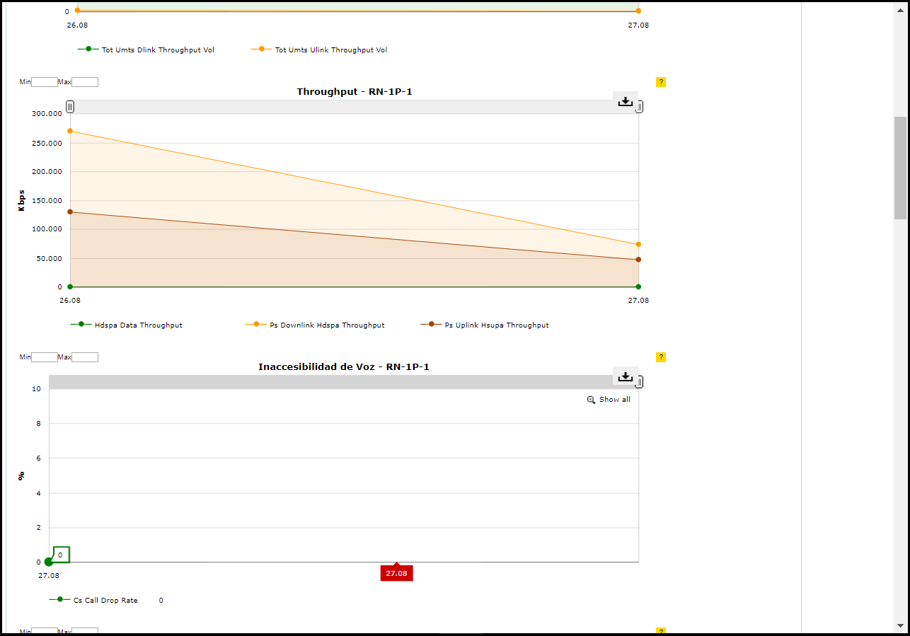

Spider Cloud¶
1. OBJETIVO¶
- Tener las datos en las tablas raw,para poder calcular las sumarizaciones hour,bh,day,ibhw y luego poder graficarlos en Smart
- Facilitar al usuario a través de Smart mediciones de nodos y celdas cisco small cell
2. ALCANCE¶
- Áreas involucradas: Calidad y Performance de Red
3. DEFINICIONES¶
- Falda: Servidor UNIX en donde se importan los XML desde el proveedor, y en donde se encuentra Smart. El nombre es falda.claro.amx.
4. DESCRIPCION GENERAL¶
Se divide el proyecto en dos partes,una que se encarga de ejecutar el parser y cargar las tablas raw y hour,luego realiza un insert sobre la segunda parte del proyecto para automatizarlo, en la segunda parte se realizan las sumarizaciones y se cargan las tablas BH,DAY e IBHW.
5. MACROFLUJO DEL PROCESO¶
6. DESCRIPCION DETALLADA¶
6.1. Datos Origen¶
- Server Origen y Path: 10.84.105.143, path : /home/data/PM/
- Cantidad de archivos origen: 4 archivos por nodo.
- Frecuencia actualización: Frecuencia 15 mintos
- Tipo de Archivo: XML
6.2 Datos destino¶
- Server Destino: cortado.claro.amx
- Tabla Auxiliar: Si
- Frecuencia de corrida del proceso: 1 vez por hora
- Regionales: No
- Sumarizacions disponibles segun tablas:
- Directorio Destino (File System): /calidad/CiscoSmallCell
6.3 Listado de Tablas Utilizadas¶
- UMTS_CSC_SYSTEM_HOUR
- UMTS_CSC_SYSTEM_DAY
- UMTS_CSC_SYSTEM_BH
- UMTS_CSC_SYSTEM_IBHW
- LTE_CSC_SYSTEM_HOUR
- LTE_CSC_SYSTEM_DAY

- LTE_CSC_SYSTEM_BH
- LTE_CSC_SYSTEM_IBHW
- UMTS_CSC_CELL_HOUR
- UMTS_CSC_CELL_DAY
- UMTS_CSC_CELL_BH
- UMTS_CSC_CELL_IBHW
- LTE_CSC_CELL_HOUR
- LTE_CSC_CELL_DAY

- LTE_CSC_CELL_BH
- LTE_CSC_CELL_IBHW
- LTE_C_Cisco_Small_Cell_RAW
Al ser muy extensa la cantidad de campos de la tabla se adjunta el principio y final de los campos.
- UMTS_C_Cisco_Small_Cell_RAW
Al ser muy extensa la cantidad de campos de la tabla se adjunta el principio y final de los campos.
6.4. Proceso Pentaho¶
Proyecto Spider Cloud YYYY MM DD
Variable HOME: CSC-HOME
Descripción
Dentro de Set Variables se levantan las variables
Se realiza la carga de la tabla RAW y HOUR en Ins. Process To Run DAY & BH se realiza un insert para ejecutar automáticamente el proceso de sumarizacion de las tablas BH, DAY e IBHW.
Variable HOME: CSC-HOME
Descripción
Dentro de Calc Sum BH, DAY, IBHW, se divide en Get P_FECHA Variable se levanta una variable que viene por parámetro y Call G_CISCO_SMALL_CELL.P_CALCULAR_SUMARY_CSC_FC se realiza la sumarizacion de la tabla HOUR para el cálculo de la tabla BH,DAY,IBHW.
Dentro de Write InsProcess se levantan variables que vienen por parámetro
6.5. ARCHIVOS ORIGEN A DESTINO Y LIMPIEZA DE LOS MISMOS¶
La extracción de los archivos xml del servidor origen se realiza mediante una librería de java llamada SFTP, la limpieza de los archivos xml se realiza con procesos establecidos que borran los xml de acuerdo a la fecha de la carpeta DATA de cada proyecto
El script que llena las tablas raiz del proceso es runCSCEndToEnd.sh
El path donde se encuentran los scripts en cortado es :
/calidad/CiscoSmallCell/Scripts
Los Scrips a utilizar son:
6.6. Controles¶
Actualmente este control se realiza mediante la tabla CONTROL_FILES que controla la diferencia de cantidad de registros que se insertaron en la tabla raw con la cantidad de registros que se procesaron en el parser.
7. REPROCESO MANUAL¶
Para realizar el reproceso se debe ejecutar el script runCSCEndToEndRework.sh con la fecha que se desea reprocesar con el formato YYYYMMDD.HH24 (EJ:20170813.12).
Ubicación de los scripts: CiscoSmallCell/Scripts
Para realizar el reproceso se debe ingresar los siguientes parámetros:
Fecha yyyyMMdd.HH
8. REPORTES DE SMART¶
- Principales KPI Celda Diario/ Histórico
DIARIO

HISTOICO
- Principales KPI Nodo Diario/ Histórico
DIARIO
HISTOICO